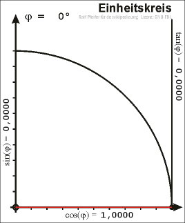

Grundwissen
- Potenzgesetze
- Logarithmen und Exponentialfunktionen
- Trigonometrie
- Rechnen mit Brüchen
Potenzgesetze
- \(a^m\cdot a^n=a^{m+n}\)
- \( a^m \cdot b^m = (a\cdot b)^m \)
- \( (a^m)^n = a^{m\cdot n}\)
- \(a^{-~\frac{m}{n}} = \frac{1}{a^\frac{m}{n}} \)
- \(\sqrt[m]{a^n} = \sqrt[m]{a}^n = a^\frac{n}{m}\)
- \( (\frac{a}{b})^m = \frac{a^m}{b^m}\)
Definition und Eigenschaften von Exponentialfunktionen
- \( f(x) = a^x ; a > 0; a\neq 1\)
- streng monoton \( \begin{cases} a > 1: steigend \\a <1 :fallend \\ \end{cases} \)
- \[ \lim_{x \to +\infty} a^x = \begin{cases} a > 1: +\infty \\a <1 : 0 \\ \end{cases} \]
- \[ \lim_{x \to -\infty} a^x \begin{cases} a > 1: 0 \\a <1 : +\infty \\ \end{cases} \]
- \( y=0 \) als waagerechte Asymptot
- wächst stärker als \(n^x; n\in \mathbb{R}\) \[ \rightarrow \lim_{x \to \infty} a^x > \lim_{x \to \infty} x^n ;~ a,n \in \mathbb{R}\]
- \( \mathbb{D}_{max} = \mathbb{R} ; \mathbb{W} = \mathbb{R}^+ \)
Definition und Eigenschaften von Logarithmen
- \(f(x)= a^x \Leftrightarrow f(x)^{-1}=log_a(x)\)
- \( log_b(a) = x \leftrightarrow b^x=a~ ; ~a,b,x \in \mathbb{R} \)
- \(\Rightarrow b^{log_b(a)}=a \)
- \(log_e (a) = ln \)
- \(log_{10} (a) = lg \)
- \( \mathbb{D}_{max} = \mathbb{R}^+ ; \mathbb{W} = \mathbb{R} \)
- \[\lim_{x\to +\infty} log(a) = +\infty ; \lim_{x\to 0} log(a) = -\infty \]
- \(\log_a(b) + \log_a(c) = \log_a(b\cdot c) \)
- \( \log_a(b^c) = c\cdot\log_a(b) \)
Anwendungen von Logarithmen und Exponentialfunktionen
Anwendungen von Exponentialfunktionen, wie z.B. Modellierung von Wachstumsprozessen
Anwendungen von Logarithmen, wie z.B. Messung von Intensität (dB), pH-Wert in der Chemie, Helligkeit von Sternen oder Berechnungen im Zusammenhang mit dem Zinseszins
Rechnen mit Brüchen
- \( \frac{a}{b} \cdot \frac{c}{d} = \frac{a\cdot c}{c\cdot d} \)
- \( \frac{a}{b} : \frac{c}{d} = \frac{a}{b} \cdot \frac{d}{c} \rightarrow \frac{a}{\frac{b}{c}} = \frac{ac}{b}\)
- \( \frac{a}{b} \pm \frac{c}{d} = \frac{ad}{bd} \pm \frac{cb}{db} = \frac{ad \pm cb}{db}\)
Übung
Zeige, dass
\((\frac{\sqrt[4]{\{(a+3)^2-2(a+3)b-c(2c+c^{-1})+b^2\}^3}}{e^{n\cdot\ln{(p)}}})^{\frac{4}{3}} \)=
\( \frac{(((a+3)-b)^2-)\cdot \frac{1}{\sqrt[3]{p}^n}}{p^n} -\frac{(2c)\cdot p^-n}{\sqrt[3]{p}^n} \)
Trigonometrie

- \(sin(x) = \frac{G}{H}\)
- \(cos(x) = \frac{A}{H}\)
- \( tan(x) = \frac{G}{A}\)
Gebrochen rationale Funktionen
1. Einleitung
Definition: Eine gebrochen rationale Funktion ist ein Bruch aus einem Polynom im Zähler und einem Polynom im Nenner.
\(f(x) = \frac{p(x)}{q(x)}\)
2. Nullstellen
- Definition: Eine Nullstelle ist ein Wert von x, für den der Funktionswert y gleich Null ist.
- Wie kann man sie berechnen?
- Für eine gebrochen rationale Funktion kann man die Nullstellen durch Lösen der Gleichung im Nenner bestimmen.
- Einfaches Beispiel: \(y = \frac{x+2}{x-1}\) hat eine Nullstelle bei x = -2.
- Schwieriges Beispiel: \(y = \frac{x^2 + 5x + 6}{x^2 - 3x + 2}\) hat Nullstellen bei x = -2 und x = -3.
3. Definitionslücken
- Definition: Eine Definitionslücke tritt auf, wenn der Funktionswert nicht definiert ist, obwohl der Nenner nicht gleich Null ist.
- Wie kann man sie erkennen?
- Definitionslücken können durch Faktorisieren des Nenners erkannt werden.
- Einfaches Beispiel: \(y = \frac{1}{x-2}\) hat eine Definitionslücke bei x = 2.
- Schwieriges Beispiel: \(y = \frac{x^2 - 4}{x^2 - 5x + 6}\) hat eine Definitionslücke bei x = 2 und x = 3.
4. Asymptoten
- Senkrechte Asymptoten
- Wagrechte Asymptoten
- Schräge Asypmtoten
- Ganzrationale Asymptoten
Senkrechte Asymptoten:
- Treten auf, wenn der Nenner Null wird und der Zähler nicht gleich Null ist.
- Die Gleichung der senkrechten Asymptote ist x = a, wobei a der Wert ist, für den der Nenner Null wird.
- Einfaches Beispiel: \(y = \frac{1}{x}\) hat eine senkrechte Asymptote bei \(x = 0\).
- Schwieriges Beispiel: \(y = \frac{x^2 + 1}{x-2}\) hat eine senkrechte Asymptote bei \(x = 2\).
Verhalten im Unendlichen:
Es gibt drei Fälle zu unterscheiden:
- Der Grad des Zählers (\(z)\) kleiner Grad des Nenners (\(n) \Rightarrow\) waagerechte Asymptote bei \(y = 0\).
- \(z = n \Rightarrow\). waagerechte Asymptote bei \(y = \frac{a}{b}\), wobei \(a\) der Leitkoeffizient des Zählers und \(b\) der Leitkoeffizient des Nenners ist.
- \(z > n \Rightarrow\) ein unbeschränktes Wachstum oder ein unbeschränktes Fallen, je nach Vorzeichen des Leitkoeffizienten des Zählers.
Wagrechte Asymptote bei y = 0
Einfaches Beispiel
\(y = \frac{x}{x^2+1}\)
- Grad des Zählers: 1
- Grad des Nenners: 2
- Die Funktion hat eine wagrechte Asymptote bei \(y = 0\).
Schwieriges Beispiel
\(y = \frac{2x^2-3x+1}{x^3-3x^2+2x}\)
- Grad des Zählers: 2
- Grad des Nenners: 3
- Die Funktion hat eine wagrechte Asymptote bei \(y = 0\).
Wagrechte Asymptote bei y ungleich 0
Einfaches Beispiel
\(y = \frac{x^2}{x^2+1}\)
- Grad des Zählers: 2
- Grad des Nenners: 2
- Die Funktion hat eine wagrechte Asymptote bei \(y = 1\).
Schwieriges Beispiel
\(y = \frac{4x^4-2x^3+3x^2+5x+1}{x^4+2x^3+3x^2+4x+5}\)
- Grad des Zählers: 4
- Grad des Nenners: 4
- Die Funktion hat eine wagrechte Asymptote bei \(y = \frac{4}{1}.\)
Schräge Asymptoten:
- Treten auf, wenn der Grad des Zählers genau um 1 größer ist als der Grad des Nenners.
- Die Gleichung der schrägen Asymptote ist y = mx + b, wobei m der Steigungskoeffizient und b der y-Achsenabschnitt ist.
- Einfaches Beispiel: \(y = \frac{x+1}{x}\) hat eine schräge Asymptote bei y = x + 1.
- Schwieriges Beispiel: \(y = \frac{x^3 + 2x^2 + 1}{x^2 - x - 2}\) hat eine schräge Asymptote bei y = x + 2.
Ganzrationale Asymptoten:
- Treten auf, wenn der Grad des Zählers um mindestens 2 größer ist als der Grad des Nenners.
- Die Gleichung der ganzrationalen Asymptote ist eine Polynomfunktion.
- Einfaches Beispiel: \(y = \frac{x^3 - 3x + 2}{x^2 - 4}\) hat eine ganzrationale Asymptote bei y = x.
- Schwieriges Beispiel: \(y = \frac{x^4 - x^3 + 2x^2 + x + 1}{x^2 + x - 2}\) hat eine ganzrationale Asymptote bei \(y = x^2 - x + 1\).
gehobene Definitionslücken
- Wenn eine Nennernullstelle gleich einer Zählernullstelle ist, ist dies eine gehobene Definitionslücke.
- \(f(x) = \frac{z(x)}{n(x)}\)
- \(Wenn~z(x_a)=0~und~n(x_a) = 0~ist~bei~x_a~eine~gehobene~Definitionslücke\)
Symmetrie
- \(f(x) \rightarrow f(-x) \)
- Umformen versuchen zu \(f(x)\) oder \(-f(x)\)
- \(f(-x) = f(x) \Rightarrow \) Achsensymmetrisch zur y-Achse
- \(f(-x) = -f(x) \Rightarrow\) Punktsymmetrisch zum Ursprung
- \(f(-x) \neq f(x) \land f(-x) \neq -f(x) \Rightarrow\) Keine Symmetrie zur y-Achse oder zum Ursprung
Umkehrfunktionen
- Spiegeleung an \(y=x \)
- \(f(x) \to f^{-1}(x) \)
- Umkehrbar, wenn \(f(x)\) in \(I\) monoton ist
- \( \mathbb{D}_f \to \mathbb{W}_{f^{-1}}; \mathbb{W}_f \to \mathbb{D}_{f^{-1}} \)
- \( f(x) \) nach \( x\) auslösen
- \( x \leftrightarrow y \)
Ableitungen
Sekantensteigung zur Tangentensteigung
- Die Sekantensteigung ist die Steigung einer Geraden, die durch zwei Punkte auf einer Kurve verläuft.
- Die Tangentensteigung ist die Steigung einer Geraden, die die Kurve in einem bestimmten Punkt berührt.
- Die h-Methode wird verwendet, um die Tangentensteigung mithilfe der Sekantensteigung zu bestimmen.
Ableitungsregeln
- Summenregel:
\( (u(x)+ v(x))´ = u´(x) + v´(x)\)
- Produktregel:
\( (u(x)\cdot v(x))´ = u´(x)\cdot v(x) + v´(x)\cdot u(x)\)
- Quotientenregel:
\( (\frac{z(x)}{n(x)})´ = \frac{n(x)\cdot z´(x) - z(x)\cdot n´(x)}{[n(x)]^2}\)
- Kettenregel:
\( [h(g(x))]´ = h´(g(x)) \cdot g´(x) \)
- \(f(x) = x^2 + 3x + 4 \)
- \(f(x) = \sin(x) + \cos(x) \)
- \(f(x) = x^2 \cdot \ln(x)\)
- \(f(x) = e^x \cdot \cos(x) \)
- \(f(x) = \frac{1}{x} \)
- \(f(x) = \frac{x^2 + \sin(x)}{\cos(x)} \)
- \(f(x) = e^{3x} \)
- \(f(x) = \sin(2x^2 + 3x) \)
- \(f(x) = x^2 + 3x + 4 \Rightarrow f'(x) = 2x + 3\)
- \(f(x) = \sin(x) + \cos(x) \Rightarrow f'(x) = \cos(x) - \sin(x)\)
- \(f(x) = x^2 \cdot \ln(x) \Rightarrow f'(x) = 2x\ln(x) + x\)
- \(f(x) = e^x \cdot \cos(x) \Rightarrow f'(x) = e^x \cdot \cos(x) - e^x \cdot \sin(x)\)
- \(f(x) = \frac{1}{x} \Rightarrow f'(x) = -\frac{1}{x^2}\)
- \(f(x) = \frac{x^2 + \sin(x)}{\cos(x)} \Rightarrow f'(x) = -\frac{x^2\sin(x) + 2x\cos(x) + \sin(x)}{\cos^2(x)}\)
- \(f(x) = e^{3x} \Rightarrow f'(x) = 3e^{3x}\)
- \(f(x) = \sin(2x^2 + 3x) \Rightarrow f'(x) = (4x+3)\cos(2x^2+3x)\)
- \(f(x) = e^{2x} \)
- \(f(x) = e^{x^2+2x} \)
- \(f(x) = \sin(x) \)
- \(f(x) = \cos(2x)\)
- \(f(x) = \ln(x) \)
- \(f(x) = \ln(x^2+1) \)
- \(f(x) = \sqrt{x} \)
- \(f(x) = \sqrt{x^3+2x} \)
- \(f(x) = e^{2x} \Rightarrow f'(x) = 2e^{2x}\)
- \(f(x) = e^{x^2+2x} \Rightarrow f'(x) = (2x+2)e^{x^2+2x}\)
- \(f(x) = \sin(x) \Rightarrow f'(x) = \cos(x)\)
- \(f(x) = \cos(2x) \Rightarrow f'(x) = -2\sin(2x)\)
- \(f(x) = \ln(x) \Rightarrow f'(x) = \frac{1}{x}\)
- \(f(x) = \ln(x^2+1) \Rightarrow f'(x) = \frac{2x}{x^2+1}\)
- \(f(x) = \sqrt{x} \Rightarrow f'(x) = \frac{1}{2\sqrt{x}}\)
- \(f(x) = \sqrt{x^3+2x} \Rightarrow f'(x) = \frac{3x^2+2}{2\sqrt{x^3+2x}}\)
Extrema und Terrassenpunkte
- Definition von Extrema als lokale Maxima und Minima
- Berechnung von Extrema mit der Ableitung
- Notwendige Bedingung: \(Ableitung = 0\)
- Hinreichende Bedingungen: 2. Ableitung
- Beispiel: \(f(x) = x^3 - 3x^2 + 4\)
- Bestimmung der Ableitung: \(f'(x) = 3x^2 - 6x\)
- Lösen der Gleichung \(f'(x) = 0\): \(x = 0\) oder \(x = 2\)
- Bestimmung der 2. Ableitung: \(f''(x) = 6x - 6\)
- Überprüfung der Hinreichenden Bedingungen:
- \(f''(0) = -6 < 0 \Rightarrow\) lokales Maximum bei \(x=0\)
- \(f''(2) = 6 > 0 \Rightarrow\) lokales Minimum bei \(x=2\)
Beispiel
- 1. Finde die Extremstellen der Funktion \(f(x) = x^2 - 4x + 3\)
- 2. Finde die Extremstellen der Funktion \(f(x) = 3x^3 - 12x^2\).
1.Finde die Extremstellen der Funktion \(f(x) = x^2 - 4x + 3\)
- \(f'(x) = 2x - 4\)
- Setze \(f'(x) = 0\):
- \(2x - 4 = 0\)
- \(x = 2\)
- Die einzige Extremstelle ist bei \(x=2\). Es ist ein lokales Minimum, da \(f''(2) = 2 > 0\).
1.Finde die Extremstellen der Funktion \(f(x) = 3x^3 - 12x^2\).
- \(f'(x) = 9x^2 - 24x\)
- Setze \(f'(x) = 0\):
- \(9x^2 - 24x = 0\)
- \(3x(3x-8) = 0\)
- \(x = 2\)oder \(x = \frac{8}{3}\)
- Die Extremstellen sind bei \(x=0\) und \(x=\frac{8}{3}\). Es ist ein lokales Maximum bei \(x=0\), da \(f''(0) = 18 > 0\), und ein lokales Minimum bei \(x=\frac{8}{3}\), da \(f''(\frac{8}{3}) = 18 > 0\).
Die Normale
- Die Normale auf einer Kurve steht senkrecht auf der Tangente an einem bestimmten Punkt.
- Die Steigung der Normalen ist das negative Kehrwert der Steigung der Tangente an diesem Punkt.
- Die Gleichung der Normalen an einem Punkt mit Koordinaten \((x_0, y_0)\) auf einer Kurve \(y=f(x)\) lautet:
- \(y-y_0 = -\frac{1}{f'(x_0)}(x-x_0)\)
Beispiele
- Gegeben sei \(y=x^2\) und wir wollen die Normale an der Stelle \(x=1\) bestimmen.
- Gegeben sei \(y=\frac{1}{x}\) und wir wollen die Normale an der Stelle \(x=2\) bestimmen.
Beispiel für eine einfache Kurve:
- Gegeben sei \(y=x^2\) und wir wollen die Normale an der Stelle \(x=1\) bestimmen.
- Die Ableitung von \(y=x^2\) ist \(y'=2x\).
- Die Steigung der Tangente an der Stelle \(x=1\) ist also \(2 \cdot 1 = 2\).
- Die Steigung der Normalen an der Stelle \(x=1\) ist also \(-\frac{1}{2}\).
- Der Punkt auf der Kurve bei \(x=1\) ist \((1,1)\).
- Die Gleichung der Normalen lautet also: \(y-1=-\frac{1}{2}(x-1)\) oder \(y=-\frac{1}{2}x+\frac{3}{2}\).
Beispiel für eine schwierigere Kurve:
- Gegeben sei \(y=\frac{1}{x}\) und wir wollen die Normale an der Stelle \(x=2\) bestimmen.
- Die Ableitung von \(y=\frac{1}{x}\) ist \(y'=-\frac{1}{x^2}\).
- Die Steigung der Tangente an der Stelle \(x=2\) ist also \(-\frac{1}{2^2}=-\frac{1}{4}\).
- Die Steigung der Normalen an der Stelle \(x=2\) ist also \(-\frac{1}{-\frac{1}{4}}=4\).
- Der Punkt auf der Kurve bei \(x=2\) ist \((2,\frac{1}{2})\).
- Die Gleichung der Normalen lautet also: \(y-\frac{1}{2}=4(x-2)\) oder \(y=4x-\frac{15}{2}\).
- \( Wenn~ A \cap B = \phi,~P(A\cup B) =P(A) + P(B) \)
- \( P(A) \geqq 0 \)
- \( P(\Omega) = 1\)
- \( A \cup \bar{A} = \Omega \)
- \( A \cap \bar{A} = \phi \)
- \( P_A(B) = \frac{P(B\cap A)}{P(A)} \)
- \( P(A\cap B) = P(A) \cdot P(B) \)
- \( P(A\cup B) =P(A) + P(B) - P(A\cap B) \)
Vierfeldertafel
\( \begin{array} {|r|r|}\hline & A & \bar{A} & \\ \hline B & A\cap B & \bar{A}\cap B & P(B) \\ \hline \bar{B} & A\cap\bar{B} & \bar{A}\cap\bar{B} & P(\bar{B}) \\ \hline & P(A) & P(\bar{A}) & P(\Omega) \\ \hline \end{array} \)
Unabhängigkeit von Ergebnissen: 11 S.184/5
Übung (+Vierfeldertafel): 11 S.184/Bsp. 3
- \(X: \omega \rightarrow X(\omega)~mit ~\omega \in \Omega ~und~ X(\omega) \in \mathbb{R} \)
- Die Wahrscheinlichkeitsfunktion ordet jedem \( x_i (i = 1,2,...,n) \) einer Zufallsgröße X die Wahrscheinlichkeit \( P(X=x_i) \) zu
Absolute Häufigkeitsverteilung vs. kumulative Häufigkeitsverteilung
Erwartungswert
\( E(X) = \mu = x_1\cdot P(X=x_1) +x_2 \cdot P(X=x_2)+ ...+ x_n\cdot P(X=x_n) \)
Binonialverteilt: \( E(X) = \mu = n \cdot p\)
Standardabweichung und Varianz
\(\sigma = \sqrt{Var(X)} \)
\[ Var(X) = \sum_{i=1}^{n}(x_n-\mu)^2\cdot P(X=x_n) \]
\(= (x_1-\mu)^2\cdot P(X=x_1) + (x_n-\mu)^2\cdot P(X=x_n) +...+ (x_n-\mu)^2\cdot P(X=x_n) \)
Binomialverteilt: \( Var(X) = n\cdot p \cdot (1-p)= n\cdot p \cdot q \)
\( \begin{array} {|r|r|}\hline & mit ~Zurücklegen & ohne~ Zurücklegen \\ \hline mit~ Reihenfolge & n^k & n\cdot(n-1)\cdot...\cdot(n-k+1) \\ \hline ohne~ Reihenfolge & \frac{(n+k-1)!}{(n-1)!\cdot k!} & \left(\begin{array}{r} n \\ k\end{array}\right) = \frac{n!}{k!\cdot(n-k)!} \\ \hline \end{array} \)
Bernoulli-Experiment /-Kette
Ein Zufallsexperiment mit exakt zwei Ergebnissen, die Wahrscheinlichkeiten sind \( p\) und \( q = (1-p) \)
\( P(X=k) = \left(\begin{array}{r} n \\ k\end{array}\right) \cdot p^k \cdot q^{n-k} \)